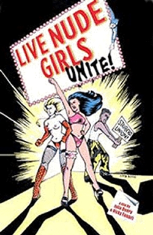

Submitted on Mon, 10/02/2006 - 3:41pm
Disclaimer - The following article is reposted here because it is an issue with some relevance to the IWW. The views of the author do not necessarily agree with those of the IWW and vice versa.
It is relevant to the IWW on two counts: First of all, the IWW helped launch the original unionization drive at the Lusty Lady ten years ago. Secondly, it demonstrates some of the limitations of workers cooperatives and collectives without unions.
By Sarah Phelan - San Francisco Bay Guardian, September 27, 2006
If you've taken a women's studies course in the past decade or if you're a patron or follower of the sex industry, you've heard of San Francisco's Lusty Lady. Depicted as a bastion of feminist values and workers' rights, the 24-hour peep show floats amid the sea of macho-style strip clubs that dominate North Beach's central strip.
Sure, the Lusty features live nude girls wiggling and jiggling while male customers masturbate in small enclosed booths, but dancers are protected from unwanted splashes of semen and sexual advances thanks to the panel of glass that separates them from the customers. Equally important, at least in the eyes of feminist voyeurs and dancers, is the theater's reputation for having a broader vision of female beauty than prevailing cultural norms and for being a venue where discrimination simply isn't tolerated. These credentials date back to the ’90s, when the club's dancers traded boas for picket signs in what became a successful bid to organize the only unionized strip joint in the nation.
Back then, the drive to unionize was triggered by poor working conditions, including one-way mirrors that allowed customers, newly empowered with the affordable digital technology that emerged in the mid-’90s, to clandestinely film performers. Worried their images would end up as Internet porn or in bootleg videos or used against them in custody battles, the dancers and the male support staff joined forces and won representation with SEIU Local 790.
Less publicized is the fact that three years ago the club's former management sold the business to the Lusty's workforce. Since then, the theater has been run as an employee-owned cooperative, with an elected board of directors that signs the union's collective bargaining agreement every year. Given the harsh fiscal climate that followed the dot-com bomb and the workers' general lack of business experience prior to their involvement in the Looking Glass Collective (as the Lusty's co-op is called), it's no big surprise that the theater is currently facing some fiscal and management challenges.
But the next chapter in the Lusty Lady saga is the strangely twisted tale of how a small faction of male workers is trying to decertify the union against a backdrop of inflammatory e-mails, emotional outbursts, suspensions, and firings, along with competing allegations from dancers of sexual harassment and unfair labor practices.
It all started when one of the men began to argue that the place was losing money because the dancers were too fat.
Now some male co-op members (who work the front desk and the door and have the unpleasant job of cleaning the little rooms) say the union contract isn't valid anymore because the co-op makes no distinction between management and labor. They are also spinning events to make it appear as if the National Labor Relations Board (NLRB) agrees.
DANCERS OF SIZE
The tale goes back to July, when a support staffer named Davide Cerri sent the co-op board an e-mail complaining that the peep show's revenues were falling off. Since everybody's pay at the Lusty is based on monthly revenues, any decline in cash flow would hit every worker's wallet.
Cerri claimed that the Lusty's madams were hiring "unwatchable girls" — women who were too big and not quite sexy enough — and that as a result, the club lost money.
"People comes [sic] asking for refunds, because they do not want to see girls that they would not want to have sex with even if they were completely drunk," Cerri wrote. "This is reality, not question of options. We sell fantasies, not nightmares."
Cerri's missive so outraged dancer Emma Peep that she posted a copy on a message board where all the dancers could read it.
As Peep explained to the Guardian, "Davide's e-mail was against everything we stand for, and it's against the law to hire and fire based on size discrimination."
But by making the missive public, Peep set off a firestorm.
"Everyone flipped out, people were crying in the dressing room, and the male staffer got ostracized," one Lusty board member, who asked not to be identified by name, told us. "It's great what we at the Lusty think the standards of beauty are, but the reality is that we're in the adult entertainment business."
Peep claims Cerri's missive "led to others calling for the termination of women based on their size" — and in the end, to her own July 30 termination. In a supreme twist of irony, given that she filed a grievance with the union and wanted Cerri fired for his e-mail, Peep instead found herself fired "for creating a disruptive, hostile work environment" — via an unsigned letter shoved under her door.
Documents filed with the NLRB show that shortly after Peep filed her grievance, Cerri filed one of his own: he charged SEIU Local 790 with failing to represent his grievances and with treating and representing male and female employees differently.
Last week the NLRB's regional office dismissed Cerri's charges — on the grounds that the Lusty is a completely member-owned and member-operated cooperative and that as a shareholding member with the ability to affect the formulation and determination of the Lusty's policy, Cerri is a managerial employee.
"Accordingly, the Union's duty of fair representation does not extend to you," ruled NLRB acting regional director Tim Peck in a letter.
In the meantime, the union has continued to press Peep's grievances. On Aug. 4, SEIU Local 790 staff manager Dale Butler wrote Lusty Lady board members Miles Thompson, Monique Painton, and Chelsea Eis, informing them that Peep's termination was "without just cause" and "inappropriate."
Butler told the board members that the Lusty Lady's union contract provides for mediation and that the theater could be subject to $2,000 in arbitration fees plus attorneys' fees plus Peep's back wages (a triple whammy that could bankrupt the already fiscally struggling club). When the union threatened legal action, the board finally agreed to mediation.
WHO'S THE BOSS?
Meanwhile, there's a dispute about whether the union actually has a valid contract. Union representatives say they sent a final version of this year's agreement to the board, which never returned it. Butler told the Guardian that on Sept. 25, male support staffer Tony Graf called the union to say that the board had no objections to the contract — except for an antiharassment clause that shop steward Sandy Wong had proposed.
Male support staffers Cerri and Brian Falls still maintain that the union has no business at the Lusty.
"The union has been fraudulently in the Lusty Lady's business, because we're a co-op and everyone is a manager," Falls said.
As for e-mail writer Cerri, he told the Guardian that "the union is automatically out and their contract is not valid, which is great news. We were mobilizing to deunionize by collecting signatures but now won't have to go forward with that." Falls also acknowledged being involved in a decertification drive.
"Before the formation of the co-op there was a common enemy, the management, who treated the dancers and the support staff badly. But once we became a co-op, there was no reason for the union to be there," he explained.
Falls also claims that Cerri's e-mail wasn't triggered by larger dancers per se, but because there were four to five large women on the stage at the same time.
"We were losing customers and saw decreased revenues," Falls said. "The business isn't doing that great. We're on a revenue-based pay scale, so it hits everybody's paycheck. We never said, 'Don't hire big women, fat women.' There are people who enjoy large women. But a block of the same kind of women — that was losing revenues."
Financial records obtained by the Guardian, however, show that the Lusty Lady made an average of $28,000 a week in January, $27,000 in February, $28,000 in April, $26,000 in June, and $27,000 in July. That hardly looks like a dramatic collapse of income.
The last word goes to a female dancer who refused to use her stage name for fear of retaliation.
"The union can be polarizing, but it's scary to leave because it protects our rights," she said. "The problem is that people will vote against their best interests. It's like working people voting for Bush. I think I can understand that phenomenon since working at the Lusty Lady."
 By Dean Dempsey - Bay Area GMB
By Dean Dempsey - Bay Area GMB